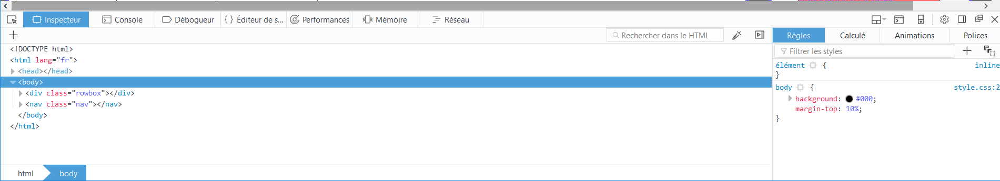

Initiation au language HTML et CSS
Définition : Une page web est codé avec le langage HTML (Hyper Text Markup Language) qui structure les éléments. il est compété par le CSS (Cascading Style Sheets) qui permet de réaliser la mise en page par feuille de style. Le HTML est un langage balisé, chaque élément est défini par une balise ouvrante < balise > ainsi qu'une balise fermante < /balise > Les balises peuvent être imbriquées les unes dans les autres tant que la structure de base est respectée
Structure d'une page web.
La structure de base d'une page web est constituée de plusieurs éléments balisés essentiels à l'interpretation du code source et doit contenir
- La description STRICTEMENT nécessaire du type du document définie par : < !DOCTYPE html >
- une balise < html > ....< /html > qui est la balise définissant les limite du code HTML et se doit de contenir la balise suivant dans la liste
- une balise < head > .... < /head > qui permet de définir le nom de référence de la page web et peut contenir d'autre informations de type "meta" qui vont agir sur le document
- la balise < head > contient de ce fait la balise title qui définit le nom de référence de la page. ici le nom de la page est <title> Cours initiation HTML et CSS </title> Attention une page web a un seul et unique "title"
- Pour finir une page html doit contenir une balise < body > .... < /body > qui définir le corps/contenu de la page web
Exemple de structure de base:
< !DOCTYPE html > < html > < head > <title> Cours initiation HTML et CSS </title> < /head > < body > Contenu < /body > < /html >
Importation d'encodage.
- Les caratères spéciaux comme les lettres accentuées nécessitent "l'importation d'un type unicode. Cette action se réalise dans la partie < head > .... < /html > <meta http-equiv="Content-Type" content="text/html; charset=UTF-8" />
Les balises sémantiques du< body > .... < /body >
- < h1 > ... < h1 > qui définit les "headers" ou intitulés h1, h2, h3, h4, h5, h6. Le header h1 a la police la plus grande police parmi es header. Par convention il n'en faut pas plus de 6 par pages
- < p > ... < /p > qui définit un bloc texte avec un saut de ligne à la fin du bloc.
- < em > ... < /em > qui rend italique le texte contenu dans cette balise et permet de conserver l'aspect sémantique du texte contenu dans cette balise.
- < strong > ... < /strong > qui rend gras le texte contenu dans cette balise et permet de conserver l'aspect sémantique du texte contenu dans cette balise.
- < mark > ... < /mark >qui surligne le texte contenu dans cette balise et permet de conserver l'aspect sémantique du texte contenu dans cette balise.
- < > ... < >
Les balises de liste < ol > et < ul >
- les balises < ol >< /ol > définissent un listing ordonnée et chaque élément de cette liste doit être balisé par < li > 1- ... < /li > par exemple sur cette page web, chaque parties du cours sont contenues dans une liste ordonnée et chaque partie est déterminé par un numéro
- les balises < ol >< /ol > définissent un listing désordonnée et chaque élément de cette liste doit être balisé par < li > ... < /li > par exemple sur cette page web, chaque sous parties du cours sont contenues dans une liste désordonnée et chaque partie est déterminé par une puce
Les définitions < dt > et < df >
- les définitions de termes < dt >< /dt > permet d'énumérer des termes à définir par les balises de définition décrites ci-dessous
les définitions de termes < dt >< /dt > permet de définir les termes à définir contenues dans les balises < dt >< /dt >
ATTENTION ! UN TERME PEUT AVOIR PLUSIEURS DEFINITION ET UNE DEFINITION PRUY AVOIR PLUSIEURS TERMES
Les balises < pre > et < code >
Ces balises permettent d'unifier la police globale du texte contenu dans celles-ci. Cette méthode s'écrit de la manière suivante sous forme de code :
< pre > < code > votre bloc à unifier < /code > < /pre >
Les tableaux
- Les tableaux en HTML sont déclarée par les balises <table> </table>
- L'entête du tableau désigne la première ligne par les balises <thead> </thead>
- Le pied du tableau désigne la dernière ligne par les balises <thead> </thead>
- les colonnes sont en réalité définies par le nombre de cases successives que vous déclarez. Dans le cas des lignes de pied et d'entête, ces case son déclaré de la manière suivante <th> </th>
- Les lignes intermédiaires du tableau désignant les lignes contenues entre les lignes d'entête et les lignes de pied du tableau. ces lignes sont déclarés par <tr> </tr>
- Dans le cas des lignes intermédiaires du tableau, les colonnes sont définies par le nombre de cases successives que vous déclarez <td> </td>
| case 1 thead | case 2 thead | |
|---|---|---|
| case1 tfoot | case2 tfoot | |
| case 1 inter | case 3 inter |
Ce tableau ci-dessus, est codé selon les règles énoncées précédemment de la façon suivante.
<table> <thead> <tr> <th> case 1 thead </th> <th> case 2 thead </th> <th></th> </tr> </thead> <tfoot > <tr> <th> case1 tfoot </th> <th> case2 tfoot </th> <th></th> </tr> </tfoot> <tr> <td>case 1 inter</td> <td>case 2 inter</td> <td></td> </tr> </table>
Attention en absence de thead et/ou tfoot le tableau et défini par défaut par les balise <tr> </tr> et <td> </td>
Les sections et articles
L'élément HTML <section> représente une section générique d'un document, par exemple un groupe de contenu thématique. Une section commence généralement avec un titre.
L'élément HTML <article> représente du contenu autonome dans un document, une page, une application, ou un site. Ceci peut être un message sur un forum, un article de journal ou de magazine, une parution sur un blog, un commentaire d'utilisateur, un widget ou gadget interactif, ou tout autre élément de contenu indépendant. Ce contenu est prévu pour être distribué ou réutilisé indépendamment
Les liens
Les liens permettent de rediriger vers un DOM existant en utilisant la balise <a> </a> et contient différent attributs
- L'attribut href="url" qui est nécessaire et permet de définir l'url de redirection du lien
- L'attribut target="url" pour lequel il existe plusieurs valeurs :
- _self : charge la réponse dans le contexte de navigation courant. Il s'agit de la valeur par défaut quand l'attribut n'est pas renseigné.
- _blank : charge la réponse dans un nouveau contexte de navigation.
Les liens peuvent aussi rediriger vers un élément interne de la page en donnant un identifiant id="identifiant" et définissant l'url de redirection de la manière suivante : href="#identifiant".
Aspect de mise en forme et CSS
Dans cette page d'initiation, aucune balise de mise en forme n’a été utilisée car elles biaisent le caractère sémantique qu'elles contiennent. Ces balises sont dorénavant obsolètes et c'est le langage CSS qui permet de définir la mise en page. La mise en page sans CSS est en réalité la mise en page CSS par défaut. Cela signifie que le texte contenu dans le corps de la page web va prendre tous l'espace disponible pour être afficher ce sont les règles CSS par défaut. Celles-ci peuvent être modifiée par le biais de feuilles de style dont l'extension est *.css. Il est possible grâce à ce langage de définir la position la taille de ces objets afin de les afficher selon vos désirs. L’exemple ci-dessous permet de se faire une petite idée
carré1
carré2
carré3
Les images apparaissant ci-dessus sont en réalité des "boites" ou "bloc" <div> successifs dont le code HTML et le suivant :
<div id="metal1" class="colorfontform"> <p>carré1</p> </div> <div id="metal2" class="colorfontform"> <p>carré2</p> </div> <div id="metal3" class="colorfontform"> <p>carré3</p> </div>
Le seul réel contenu HTML de ces boites sont les blocs p permettant l'affichage du texte. tout l'aspect décoratif est géré par le CSS qui est écrit dans un fichier à part *.css donc le code associé est le suivant :
#metal1 {
z-index: 1;
position: relative;
top : 0px;
left: 0px;
text-align: center;
background-image:url(https://s-media-cache-ak0.pinimg.com/564x/4e/0b/10/4e0b10c6c41b1291b05c6122e33a0931.jpg );
}
#metal2 {
z-index: 2;
position: relative;
top : -150px;
left: 150px;
background-image:url(http://images.memes.com/meme/838184);
}
#metal3 {
z-index: 3;
position: relative;
top : -300px;
left: 300px;
background-image:url(https://s-media-cache-ak0.pinimg.com/564x/2e/78/15/2e78151b6b5997c64b77f5f902c75819.jpg);
}
.colorfontform {
border-radius: 30%/80%;
height: 300px;
width: 300px;
border:5px solid #000;
background-size: 100%;
text-align: center;
color: red;
font-size: 20;
}
Sur le code HTML, vous constater l'utilisation des attributs "id" et "class". L'attribut "id" permet d'identifier un élément de manière unique (l'id doit absolument être unique) et peut être utilisé pour diverses fonctionnalité (liens interne ou définir des règles CSS qui seront appliquées uniquement à cet élément. L'attribut "class" permet d'appliquer les mêmes règles CSS aux éléments partageant la même classe. Cependant, il est préférable d'utiliser les classes pour définir les règles CSS.
Les sélecteurs globaux, par class ou par identifiants:
Dans le code CSS, les identifiants sont précédés d'un "#" et les classes d'un "." se sont des sélecteurs. Il est aussi possible de donner définir des règles CSS à tous les éléments d'un même type. Les propriétés ou règles CSS de chaque élément sont écrites entre accolades {propriétés}. Voici un exemple
a {
color: red;
}
.classe{
width:300px;
height:300px;
}
#id {
position: absolue;
top:0;
left;0
}
Ici tous les liens a auront une police de couleur rouge, tous les éléments partageant la classe "classe" auront une hauteur et une largeur de 300 pixels et l'élément défini par son identifiant sera placé en haut à gauche.
Il existe une multitude de propriété CSS incluant les couleurs , les formes, la position, la police, etc ... Il semble essentiel de préciser que tout élément peut en imbriquer d'autres et que tout élément est en réalité une boite. Les éléments imbriquées dans une boite héritent automatiquement des propriétés de la boîte parent à moins que vous redéfinissiez/surchargiez les propriétés d'une boite enfant pour en modifier son comportement.
Les Flexbox:
Il existe une propriété particulière des boîtes qui permet une manipulation plus aisée des boites. Cette propriété est la FlexBox. Elle permet par exemple de centrer verticalement un bloc de contenu à l'intérieur de son parent, faire en sorte que tous les enfants d'un conteneur prennent une quantité égale de la largeur / hauteur disponible, quelle que soit la largeur / hauteur disponible ou encore faire passer toutes les colonnes dans une disposition de plusieurs colonnes adoptant la même hauteur et cela même si elles contiennent une quantité différente de contenu. Il existe donc plusieurs propriétés CSS permettant de déterminer le comportement de ces FlexBox.
L'inspecteur, un outil essentiel à la mise en page.
L'inspecteur est un outil qui fait partie intégrante des navigateurs web et s'affiche avec la touche F12. Son affichage dépend du navigateur mais les fonctionnalités sont identiques. Pour le navigateur Firefox, vous obtenez cet affichage
Comme son nom l'indique, cet outil sert à inspecter chaque élément et permet de montrer également les règles CSS qui le régit. Il permet donc déterminer les problèmes d'apparence à régler pour parvenir au rendu désiré..
Les pseudos-classes
Les pseudos classes sont des mots clés particuliers qui s’ajoutent à la suite d'un sélecteur afin de modifier son état selon certaines actions de l’utilisateur. Par exemple dans mon menu de navigation, les boîtes contenant mes liens changent de couleur au passage de la souris grâce à la pseudo-classe :hover. Mon code CSS ressemble donc à cela::
.nav {
display: inline-flex;
list-style: none;
position:fixed;
background: #F0F0F0;
border:5px solid blue;
border-radius: 5%;
top:380px;
width: 300px;
right: 30px;
}
.nav div {
background: red;
border:2px solid black;
}
.nav div:hover {
background: #FFF;
border:2px solid red;
}